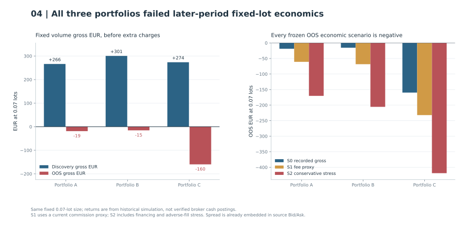

ORBINDEX
Did promising opening times hold up in a later period?
The DE30, JP225 and UK100 discovery search compared overlapping opening times. All three DE30 portfolios subsequently lost euros at fixed lot size before additional commission or financing.
Decision Three frozen German index portfolios rejected for economic promotion.
Limitation Historical broker-net profit remains unverified, and earlier research may already have examined part of the later period.
The opening-time hypothesis
An opening-range breakout trades a move beyond a range established at a particular time of day. I wanted to know whether that idea had a repeatable pattern across markets and start times, and whether any candidates would survive a later period after accounting for how orders interact and what trades cost.
Index quotes and local clocks
The source was Exness historical Bid/Ask quotes, imported into a separate MT5 custom-symbol research environment. DE30X, JP225X and UK100X represent German, Japanese and UK index CFD research symbols. Local clocks were Europe/Berlin, Asia/Tokyo and Europe/London, respectively, with historical timezone rules. Exchange-session anchor eligibility and observed CFD quotes were kept distinct: a no-quote window does not prove a scheduled broker closure. The discovery used February 2020 through November 2023 signal origins and December 2023 burnoff. Source and frozen protocol
Fixed-volume euros and price risk
Why can A have +12.87R but −€18.73? Each trade's R divides its realised price result by its own initial risk distance. Fixed-lot EUR instead weights price movement by contract size and lot volume. Summing unequal-risk R observations is not the same as summing fixed-volume money outcomes. That difference follows from the different weighting of each trade; it does not require a commission to explain it.


Could neighbouring start times confirm the peak?
The same discovery search found no qualifying neighbourhood on JP225X or UK100X. A few cells were positive, but their neighbours tell a less encouraging story. These results cover February 2020 through November 2023 signal origins, with December burnoff. Discovery source
B's extra OR5 short made its gross discovery curve look stronger, but that sleeve came from an isolated timing peak without the original neighbouring-duration support. We retained all three configurations unchanged when deciding to inspect later data. Portfolio evidence
Testing the frozen portfolios on later history
The discovery results justified testing the frozen alternatives on a later period. The historical evaluation admitted signal origins on January 1, 2024 through July 31, 2026 (inclusive), with August 2026 as burnoff only. All three portfolios ended flat; no exit was fabricated at the cutoff. Two eligible March 2026 dates had no source quotes. The result package reported 36,707,393 source quote observations over the execution period. Frozen OOS evidence
In 2025 alone, A lost 44.32R, B 53.72R and C 63.23R. B's incremental OR5 trades delivered −4.27R on the later period. None met the economic promotion criteria under the original scenarios. The portfolios stayed as frozen; we did not replace A with B, select a year cutoff or tune a filter after seeing the returns.
Broker economics and possible prior exposure
The featured ORBINDEX study was chosen after a large correlated development search. Its later 2024–2026 comparison carries possible prior historical exposure; the underlying custom-symbol physical template is not the full historical Exness broker contract. All fixed-lot EUR scenarios were negative in the later period, but broker-net accounting and a calibrated alpha significance claim remain unqualified. Subsequent quote-path forensics cannot retrospectively restore independent OOS status.
Source text · IX1 · IX2 · IX3
Portfolio closeout
I closed the program without promoting a portfolio. The later comparison and the investigation of its failures show where the discovery evidence stopped supporting the original idea.
Source evidence and reproducibility
Original Markdown article · IX1 · IX2 · IX3
The public scripts rebuild selected exhibits from disclosed aggregates. The historical backtests require private inputs and implementations.